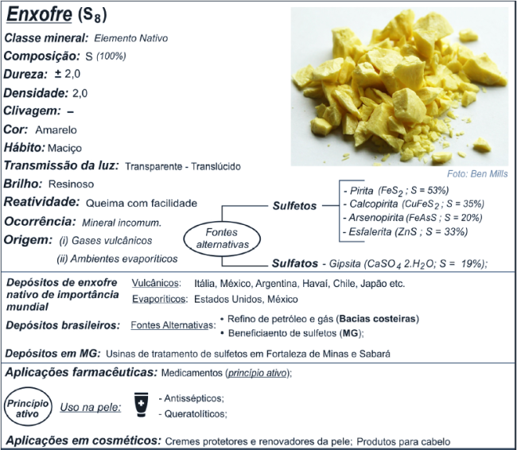
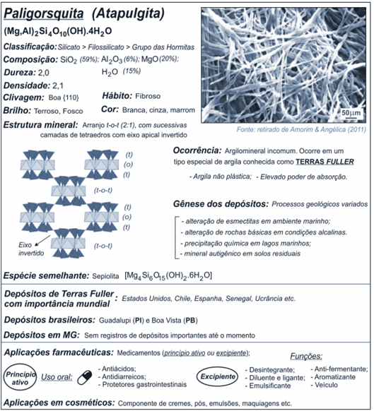

Se trata de um mineral natural com composição química CaCO3, sendo carbonato de cálcio e o principal constituinte do calcário. Bastante utilizado em diversos segmentos industriais distintos devido a sua versatilidade, a calcita possui também importante aplicação do setor industrial de cosméticos, apesar de o volume de material consumido por essas indústrias ser relativamente baixo comparado à outros setores (construção civil, fertilizantes, entre outros).
Encontrada na forma natural, principalmente, como constituintes do calcário, dolomitos e mármores, podem também estar presentes em outras formas como em cavernas constituindo espeleotemas, em veios hidrotermais resultados de precipitação de soluções ricas em cálcio, em carbonatitos (rochas ígneas formadas a partir do resfriamento de magmas ricos em cálcio e outros álcalis) ou em recifes de corais e conchas, onde foram formadas por ação biogênica.
A calcita possui cor branca ou incolor, clivagem perfeita e romboédrica, baixa dureza, brilho predominantemente vítreo, alta reatividade e sua ocorrência é abundante, inclusive no Brasil.
Os principais depósitos brasileiros de calcita estão localizados nos municípios de Cachoeiro de Itapemirim-ES, Castelo-ES, Aiuaba-CE e Ribeira-SP. Além disso o Calcário pode ser encontrado de forma abundante nos estados do Ceará, Espírito Santo, Minas Gerais, Mato Grosso, Mato Grosso do Sul e São Paulo.

Conhecido como o “mineral da beleza” do mundo natural, o enxofre (S) é um elemento e mineral não metálico de cor amarelada, faz parte da constituição de cada célula, tanto animal como vegetal e ocorre de forma nativa em depósitos vulcanogênicos, a partir da precipitação de gases vulcânicos, e sedimentos evaporíticos, resultados pela ação de microrganismos ou de reações químicas redutoras em bacias sedimentares marinhas em climas quentes (Albuquerque et al. 2005). Conhecido há séculos pela humanidade, foi utilizado como componente em cosméticos desde as antigas civilizações egípcia e chinesa e na Antiguidade Clássica. Eram usados para banhos de purificação em rituais religioso, tratamento de pele e pigmentação.
No entanto, a distribuição de enxofre nativo pelo mundo ocorre de forma bastante restrita e dificilmente de forma viável para instalação de minas de extração, sendo o enxofre nativo muito pouco explorado pelo mundo. Portanto, para extrair o enxofre da natureza, a sua exploração é feito partir de fontes alternativas como produto não-primários, como por exemplo, a partir do refino do petróleo e gás natural, ou partir da exploração de vários outros minerais que pertencem à classe dos sulfetos como pirita, esfalerita, calcopirita, arsenopirita, dentre outros; ou dos sulfatos como gipsita e barita.
No Brasil, apesar de não conseguir produzir suficientemente a sua demanda por enxofre exigida, seus principais meios de exploração da-se através do refino do petróleo e gás natural das bacias petrolíferas, do beneficiamento de folhelhos betuminosos associados a camadas de carvão, ou como subproduto das usinas de empresas mineradoras de ouro, zinco e níquel, que possuem elevadas concentrações de sulfetos associados.


Assim como a muscovita, trata-se de um filossilicato, porém o talco quimicamente é um mineral hidratado com composição magnesiana. Além disso, sua principal característica se deve a sua dureza que na escala de Mohs, apresenta D=1,0 (Deer et al. 2013), resultando em um mineral com extrema maciez. Além dessa característica, outras propriedades fazem do talco um mineral altamente versátil para ser utilizado com fins industriais, uma vez que possui caráter plástico, insolubilidade em água e em ácidos fracos, elevada flexibilidade e resistência térmica, brilho perláceo e textura sedosa ao tato. Com isso, pode-se utilizar o talco na produção não só de produtos farmacêuticos e cosméticos, mas também na confecção de plásticos, borrachas, minerais refratários, dentre outros (Tufar 2000).
A respeito de sua formação, o talco é um mineral secundário que se forma a partir de transformações mineralógicas induzidas por processos metamórficos-hidrotermais em rochas ígneas magnesianas como peridotitos, dunitos, basaltos e gabros (máficas-ultramáficas) ou em calcários dolomíticos portadores de sílica (Deer et al. 2013, Klein & Dutrow 2012, Tufar 2000). Apesar de sua grande importância e versatilidade para o setor industrial, a sua exploração é feita em tipos muito específicos de rochas ao qual tem-se o mineral como principal constituinte da paragênese, como por exemplo os talco-xistos. Somado a isso, o talco também pode ser obtido como mineral secundário no agalmatolito, rocha caracterizada por conter como principal constituinte a pirofilita (um filossilicato com propriedades semelhantes ao talco).
O principal depósito que permite a extração de talco está localizado no município de Ponta Grossa, no estado do Paraná, com aproximadamente 102 milhões de toneladas retidas (DNPM, 2011). Em segundo lugar, os depósitos que ocorrem na região de Nova Lima e Rio Acima, no estado de Minas Gerais, representam a segunda maior reserva do Brasil com cerca de 36 milhões de toneladas. Também em território mineiro, mas em menor proporção, no município de Ouro Preto tem-se depósitos de talcos localizados na porção sul do Quadrilátero Ferrífero que, de acordo com Lara Filho (1997), são explorados desde o período colonial, embora sua exploração para fins cosméticos seja mais recente. Por fim, também podemos mencionar depósitos em Brumado (BA), Bom Sucesso de Itararé (SP), Itapeva (SP), São Mamede (PB), dentre outros.

De acordo com Benbow et al. (2012) a palavra “mica” é derivada do latim “micare”, que significa “brilho”. Essa denominação se dá pelo fato de que as micas correspondem a um grupo de silicatos que pertencem à classe dos minerais em forma de folhas (filossilicatos) e que apresentam várias propriedades físico-químicas em comum, dentre elas uma clivagem basal perfeita, a superfície lisa e principalmente a aparência brilhante desses minerais. Além disso, caracteriza-se com coloração branca-prateada translúcida à totalmente transparente, podendo apresentar outras cores devido possíveis impurezas em sua composição química, e dureza de 2,5 e 4, paralelo às placas e perpendicular a elas respectivamente, na escala de Mohs.
O grupo das micas é composto por diversos tipos de minerais, sendo os mais comuns a muscovita, a biotita e a flogopita, além de algumas espécies mais raras, tais como lepidolita e zinnwaldita , sendo essas micas ricas em lítio e flúor, paragonita e glauconita, sendo estas pertencentes a subdivisão das micas sódicas , e por fim as micas ricas em cálcio tal como margarita e xantofilita. Contudo, no âmbito de indústrias de cosméticos, a muscovita apresenta-se como a mica de maior importância em sua aplicação para esse fim. Abaixo, têm-se uma figura com a Síntese das principais características mineralógicas, ocorrências e origem da muscovita, bem como exemplos de regiões mundiais, brasileiras e de Minas Gerais que detém depósitos importantes desse bem mineral. As principais aplicações como mineral farmacêutico ou cosmético também estão assinaladas.
A ocorrência da muscovita se dá em rochas ígneas, metamórficas e sedimentares, em concentrações muito variáveis, sendo formada por processos pneumatolíticos, hidrotermais e metamórficos (metamorfismo regional e de contato em condições de temperaturas baixas e altas). Somado a isso, forma-se também na cristalização magmática de rochas ácidas (silicosas), de granulação grossa, especialmente em fase final, denominadas pegmatitos, onde a exploração industrial é feita com maior frequência, uma vez que os fluidos geradores dessas rochas apresentam espaço para crescer livremente, permitindo a ocorrência de grandes cristais. Apesar de ser explorada nos pegmatitos, sua formação tem ocorrência principalmente em rochas aluminosas metamorfizadas, tal como xistos, gnaisses, filitos, etc. Por ser mais resistente que o feldspato ao intemperismo, pode ser encontrada com o quartzo em muitos sedimentos nas praias, nos fundos e margens de rios e lagos.
Os principais depósitos brasileiros que pode-se extrair muscovita para fins da indústria de cosméticos estão localizados na Província Pegmatítica Oriental, e segundo Correia Neves (1997), os pegmatitos ricos em muscovita ocorrem em grande número na Província Oriental e são agrupados em distritos locais, dois deles no estado da Bahia (São João do Paraíso e Vitória da Conquista-Itambé) e oito em Minas Gerais, e também pode-se destacar a Província Pegmatítica do Seridó, presente em territórios do Rio Grande do Norte e Paraíba.
Argilominerais é um termo genérico e abrange várias espécies minerais diferentes desde que atendam as propriedades de plasticidade e rigidez exigidas para a definição das argilas. De modo geral são minerais terrosos que apresentam fina granulometria e característica plástica, apresentam estrutura cristalina em camadas, fazendo parte do grupo de minerais denominados filossilicatos. Possuem em sua constituição química o óxido de alumínio, óxido de silício e alguns óxidos de metais alcalinos e alcalinos terrosos. Na natureza estes materiais são encontrados em abundância e não são materiais de alto custo, isto é, além do baixo custo estes apresentam também fácil acesso. Podem ser considerados, de acordo com o processo genético de formação dos argilominerais em Argilas Primárias e Secundárias. O primeiro ocorre quando são formadas por processos de alteração atuantes em minerais pré-existentes, ou seja, in situ com preservação das características da rocha fonte. O segundo ocorre quando os argilominerais primários sofrem algum tipo de transporte por agentes externos e depositam-se em bacias sedimentares.
Suas propriedades já eram conhecidas e exploradas desde a pré-história com seu uso no tratamento de feridas e para a limpeza da pele. Relatos também datam que os egípcios faziam uso de argilas como máscaras faciais. Desde tempos remotos a comunidade indígena faz o uso de argilas no processo de cicatrização de ferimentos, além disso, o uso terapêutico destas argilas também é uma prática comum e datada historicamente.
Os argilominerais do grupo da caulinita, as esmectitas, com grande destaque ao tipo Montmorilonita e as hormitas, com destaque as Atapulgitas e Sepiolitas, são os mais utilizados nas indústrias de cosméticos. O mercado internacional classifica as argilas de acordo com o conteúdo mineral, propriedade e classificações. O caulim (argilas esbranquiçadas compostas majoritariamente por caulinita), a bentonita (argilas compostas majoritariamente por montmorilonita) e terras Fuller (argilas fibrosas, ricas em hormitas) são as mais visadas pela indústria dos cosméticos.
O Brasil é um país bastante abundante em argilominerais, considerado como detentor de uma das maiores reservas mundiais. Por isso esse amplo potencial de utilização dos argilominerais torna o Brasil um país cheio de oportunidades para a pesquisa e o desenvolvimento de novos produtos cosméticos.
